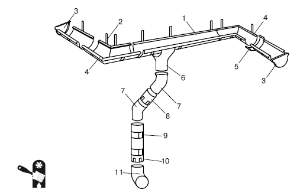
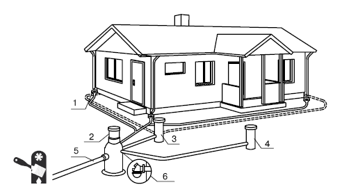
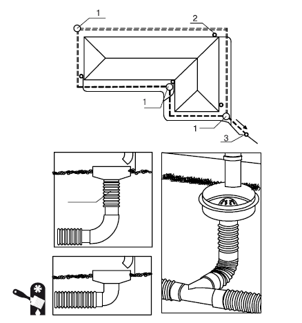

Ливневая канализация.

Ливневая канализация предназначена для сбора и отвода дождевых и талых вод. В современном виде ливневая канализация осуществляет не только сбор и отвод воды, но еще и ее очистку. Устройство ливневой канализации – дело ответственное, так как при ее отсутствии или при ошибках проектирования/исполнения можно получить заболоченный участок или регулярные затопления подвала и цокольного этажа здания.
Ливневую канализацию для загородного дома с точки зрения домовладельца можно разделить на две части:
? водосточная система – часть ливневой канализации, относящаяся непосредственно к дому, фактически являющаяся частью кровли (устройство водосточной системы относится к кровельным работам – это завершающий этап устройства кровли);
? внешняя ливневая канализация – та часть ливневой канализации, которая «занята» сбором воды с участка и выводом ее за его пределы.
Для домовладельца равно важны обе части ливневой канализации. Отсутствие водосточной системы означает возможные повреждения здания, снижение срока его эксплуатации, а отсутствие внешней ливневой канализации – это испорченный участок, возможное затопление и загрязнение колодца поверхностными водами (дождевыми или талыми) и т. д.
Водосточная системаВодосток – это конструкция, которая обеспечивает отвод дождевой воды и талых снегов с кровли, таким образом защищает фасады и фундамент от возможных повреждений, связанных с намоканием, и продлевает срок их службы.
Выделяется три принципиальных варианта устройства водоотвода:
? неорганизованный водоотвод – фактически отсутствие водоотвода, при этом вода просто стекает с крыши непосредственно на землю, попадая и на наружные стены, и на фундамент, что приводит к их повреждению и преждевременному износу;
? внутренняя водосточная система – трубы устанавливают внутри здания на некотором расстоянии от наружных стен, при этом на кровельном покрытии монтируются уклоны к водоприемным воронкам, которые располагаются на расстоянии около 0,5 м от выступающих частей здания, равномерно по всей площади;
? наружная водосточная система – вода, стекающая с кровли, отводится к наружным трубам по установленным желобам.
Наиболее распространена наружная водосточная система, как более дешевая и простая в монтаже и уходе.
Водосточные трубы и желоба изготавливаются из различных материалов: стали с односторонним или двухсторонним полимерным покрытием, меди, титана-цинка, алюминия, пластика.
Металлические системы водоотводамогут быть как круглого, так и прямоугольного сечения. Кроме внешнего вида, они отличаются антикоррозионными покрытиями. К примеру, оцинкованный металл покрывается с обеих сторон грунтовкой и полимером. А медные водосточные системы не нуждаются в покрытии, так как медь надежно защищена естественным слоем патины.

Внимание
При устройстве водоотвода с использованием цинкотитановых труб необходимо следить, чтобы они не соприкасались с медными деталями или железными узлами во избежание электрокоррозии.
Пластиковые водостокиуступают металлическим в прочности (но при этом выдерживают и температурные перепады, и прямое солнечное излучение, и даже ударные нагрузки), зато абсолютно не подвержены коррозии, гораздо легче, а уход за ними проще – грязь на пластиковые поверхности налипает меньше, чем на металлические.
Кроме того, пластиковые водостоки, в отличие от металлических с полимерным покрытием, не боятся повреждения покрытия – если в металлических деталях начинает развиваться коррозия в результате повреждения покрытия, то пластик в этом плане абсолютно надежен и царапины на него не действуют. А этот момент весьма существенен, так как водосточные системы нуждаются в регулярной очистке, при этом применяются жесткие щетки, способные повредить полимерное покрытие металлических водостоков.
Монтаж системы водостока ведется одновременно со строительством крыши. Обычно водосточную систему прокладывают по всему периметру здания. Она состоит из отдельных элементов, таких как водосточные желоба, трубы, водоотводы, воронки и др. (Рис. 2.9). Все элементы системы и сопутствующие материалы можно приобрести вместе – современные водосточные системы представляют собой своеобразный конструктор, в котором можно выбрать нужные детали, чтобы конечное изделие в точности соответствовало проекту.

Рис. 2.9.Детали водосточной системы: 1 – полукруглый желоб; 2 – крюк; 3 – заглушка желоба; 4 – угол желоба; 5 – соединитель желоба; 6 – воронка желоба; 7 – колено трубы; 8 – круглая соединительная труба; 9 – кронштейн; 10 – круглая труба; 11 – колено стока
Водостоки надежно закрепляют с помощью специальных крюков, кронштейнов и хомутов.
При проектировании водосточной системы нужно заранее определить тип и систему водоотвода. Лучше всего – подземная ливневая канализация. На втором месте – сбор стоков в специальном резервуаре. Последним по эффективности является традиционное колено на высоте 20–30 см от земли, не дающее воде литься на цоколь. Следует заметить, что, хотя эта система идет в списке последней, обычно ее вполне достаточно, чтобы надежно защитить как наружные стены, так и цоколь и фундамент здания. И, что немаловажно, она является самой экономичной и поэтому используется наиболее часто при строительстве загородных домов.
Важный элемент водосточной системы кровли – желоба. Их назначение – непосредственный сбор воды, стекающей с крыши. Желоба монтируют с небольшим уклоном, чтобы вода из них могла свободно стекать в трубы водостока, куда она поступает с помощью воронок. Этот элемент водосточной системы несет большую нагрузку, а потому при его установке необходимо отдельное надежное крепление, иначе перекос воронки, а вместе с ним и повреждения водостока гарантированы уже в первую зиму. Чтобы труба водостока могла обойти выступающие части здания, а также для отвода воды от цоколя применяются так называемые колена.
Чаще всего для стыковки отдельных секций на концах труб предусматривают уширения, и элементы водостока вставляют друг в друга, но иногда для сочленения применяют специальные муфты.
Монтаж пластиковых водостоков имеет некоторые особенности. Если элементы просто соединять встык, то при сильном изменении температуры водосток может деформироваться и даже лопнуть. Поэтому такие водосточные системы комплектуются компенсаторами температурного расширения.
Чтобы предотвратить деформацию металлических водостоков, их отдельные части соединяют специальной муфтой.
Внешняя ливневая канализацияВнешняя ливневая канализация состоит из трех систем:
? сбора талых и дождевых вод;
? фильтрации талых и дождевых вод;
? водоотведения талых и дождевых вод.
Чаще всего владельцев загородных домов интересуют только две системы: сбор и водоотведение талых и дождевых вод. Система фильтрации стоит весьма недешево и довольно габаритна, поэтому домовладельцы предпочитают просто вывести талые и дождевые воды за пределы своего участка – а там пусть они стекают в общественную ливневую канализацию, где и проходят полагающуюся очистку и фильтрацию (Рис. 2.10).

Рис. 2.10.Ливневая канализация: 1 – воронка под водосточную трубу; 2 – коллекторный колодец; 3 – дренажный колодец; 4 – колодец для дождевой воды; 5 – сброс воды в грунт; 6 – обратный клапан
Ливневая канализация может быть как открытой, так и закрытой. При открытой ливневой канализации для сбора и отвода воды используются открытые канализационные каналы (в простейшем варианте – канавки с уклоном в сторону улицы). При закрытой ливневой канализации эти каналы являются закрытыми (для этого используются трубы, чаще всего бетонные или полиэтиленовые). Может использоваться и ливневая канализация смешанного типа – с открытыми и закрытыми канализационными каналами.
Грамотный расчет ливневой канализации – дело непростое. Следует учитывать множество факторов, начиная от погодных условий (среднегодовое количество осадков в данной местности, количество солнечных и пасмурных дней, температура и т. д.) и заканчивая типом грунта на участке. Немаловажное значение имеет и глубина залегания грунтовых вод, наличие или отсутствие на участке автономной системы водоснабжения (колодца или скважины) и многое другое. Нужно рассчитать планируемое количество талых и дождевых вод, которые будут поступать не только с самого участка, но и на участок – с прилегающих территорий (к примеру, если участок располагается в довольно низком месте, то на него будут попадать все воды с более высоких мест). Лучше всего доверить такой расчет специалистам, потому что, занимаясь планированием ливневой канализации самостоятельно, можно получить довольно дорогостоящую систему, которая не будет эффективно работать.
Именно потому, что полноценная ливневая канализация является дорогостоящим и относительно сложным оборудованием, владельцы загородных домов предпочитают ограничиваться «урезанным» вариантом.
В случае небольшого дачного или загородного дома ливневая канализация представляет собой несколько канав, прокопанных до улицы. В эти канавы могут быть вмонтированы пластиковые желоба, или канавы могут быть забетонированы (устраиваются бетонные желоба), а могут быть оставлены как есть (в случае глинистых плотных грунтов).
Если участок достаточно велик и на нем собирается много талых и дождевых вод, то перекапывать его разнообразными канавками – не слишком хорошая идея. Проще установить закрытую систему ливневой канализации в упрощенном виде: уложить в выкопанные канавки трубы, которые будут доставлять талые и дождевые воды за пределы участка (Рис. 2.11). При этом коллекторный колодец находится уже за пределами участка и является частью общественной системы ливневой канализации.
При устройстве ливневой канализации закрытого типа необходимо учесть возможную нагрузку на трубы (например, будет над трубами расположена пешеходная или подъездная дорожка, то есть придется ли трубам выдерживать вес человека либо автомобиля). Цена труб различается в зависимости от предполагаемой нагрузки, а соответственно, изменяется стоимость монтажа ливневой канализации.

Рис. 2.11.Устройство ливневой канализации: 1 – дренажный колодец; 2 – воронка для сбора воды с крыши; 3 – коллекторный колодец